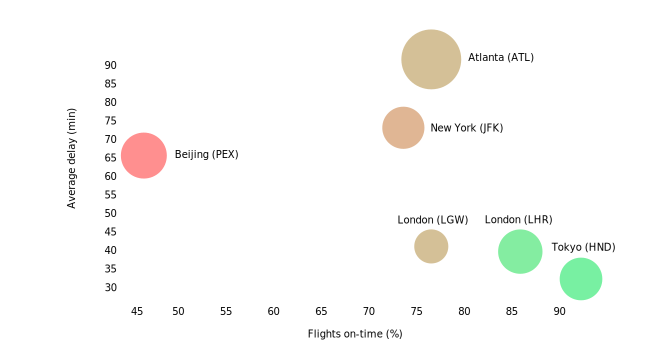
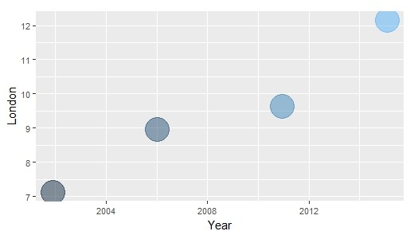
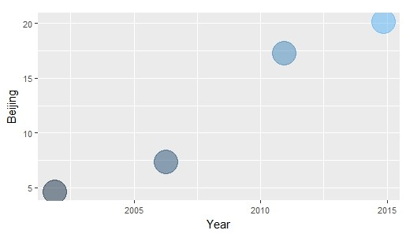
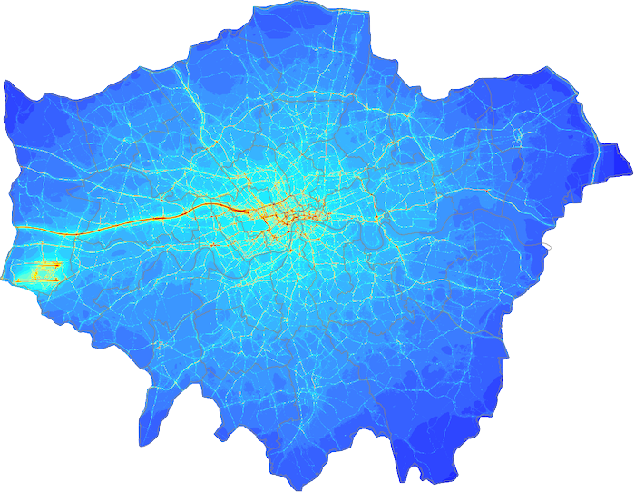
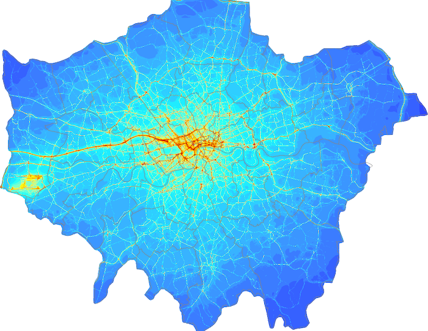
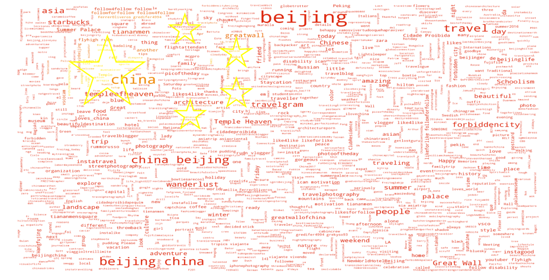

Number of flights
On-time top 50 rank
Air traffic
A city’s air traffic activity is a good indicator of it’s global significance - be it for business or leisure. Tourism has a huge impact on a city, resulting in an increased need of a reliable transport service and stable infrastructure to deal with the influx of visitors.
The planes you see moving across the sky here are above London right now.
In 2016, London's 5 airports dealt with 162 million passengers.
That's 444,754 passengers per day, or one plane every minute.
Beijing's 2 airports dealt with 273,917 passengers per day.
Source: Wikipedia, BBC, FlightStats
Pollution - London




2008
2011
2015
With modernization and development in our lives pollution has reached its peak; giving rise to global warming and human illness. While all regions are affected, fast-growing cities are the most impacted with many showing pollution levels at five to 10 times above World Health Organisation recommended levels.

Cars and taxis
London
Number of taxis: 83,000
Average cost: £6-9
Compared to bus fare: 4x
Compared to hourly wage: 0.8%
Work time needed: 51 minutes
Beijing
Number of taxis: 83,000
Average cost: £6-9
Compared to bus fare: 3.4x
Compared to hourly wage: 0.8%
Work time needed: 20 minutes
Cars and taxis ....
Bikes and buses - London vs Beijing
Transport profiles
Click the key items to toggle between cities
Are there patterns amongst cities in terms of their activity? Do we often see large, fast-paced cities, and small, slow-paced cities? What variables would factor into a profile like this?
A radar chart has been used to plot cities across 14 different variables that help indicate activity in some form or shape.
By overlaying multiple cities on the chart, it becomes easy to compare cities across those variables, and highlights similar and different profiles using the space and shape of the plots.
The values have been normalised against the maximum scoring value for each variable.
Try comparing all other cities to Beijing, and notice the difference in profile patterns.
Building heights
As every acting scene has its own props, the urban one has the buildings. The majority of our everyday routine activities take place within these concrete infrastructures. From small houses locating in the suburb, to big co-orporate offices hundred meters above the ground level, buildings host all kind of activities.
Focusing on two major business centers as London and Beijing, our initial idea was to identify the highest buildings in these cities. Skyscrapers was always a way for cities to highlight their party.
House prices - Beijing
London and Beijing have high projected growth and are economically diverse, they draw in residents by offering plenty of cultural and leisure activities. In both cities house prices have been rising faster than wages. These price increases make such metropolitan areas less livable for average and lower income households
Online activity
London
Beijing
Top 5 attractions
Credits:
Icon vector created by Freepik Designed by Freepik Highway cityscape flat style | Free vector by Vexels London city landscape | Free vector by Vexels Air traffic tower from clipartfest.com Skyscrapers from bhamwebdesign